概论
计算机网络基本概念详解
计算机网络：
- 本质属性：计算机技术和通信技术相结合的产物
- 其中计算机技术负责“信息处理”，而通信技术则负责“信息传递”
- 构成特征：独立自治、相互连接的计算机集合
- “独立自治”：每台计算机都是完整的、能独立工作的系统
- “相互连接”：通过通信介质（网线、光纤、无线电波）和设备（交换机、路由器）连接。
- 构建过程：将不同位置、相对独立功能的计算机，通过通信技术连接成网络系统
- 核心目标：遵循协议和通信架构的基础上，节点之间实现数据交互和信息共享
[!note]
计算机网络的 “核心三要素”
- 组成基础：多台独立自治的计算机（不是终端，不是单机）；
- 连接条件：通过通信技术（介质 + 设备）和协议（规则）连接；
- 核心目标：实现数据交互和信息共享（这是网络的最终价值）。
总结：计算机网络就是一些具有独立功能的计算机通过通信介质相互连接起来，以实现资源共享的计算机的集合。
[!tip]
计算机网络和互联网的不同
互连网：一些相互连接的计算机网络的集合（网络的网络）。
互联网：互连网的同义词。
计算机网络的发展
从 “单机互联” 到 “万物互联”
计算机网络的演变
这一阶段的核心是解决 “多设备与中心计算机的连接问题”，逐步从 “终端依赖主机” 走向 “计算机独立互通”
- 联机系统（20 世纪 50-60 年代）：终端 - 通信线路 - 计算机
- 分时系统（20 世纪 60 年代中后期）：终端 - 集中器 - 计算机
- 计算机网络（20 世纪 60-70 年代）：独立的计算机互连
- 不再依赖 “中心主机”，而是让多台独立自治的计算机（有自己的操作系统和计算能力）通过通信线路直接连接，形成 “网络”。
- 标准化网络（20 世纪 80 年代后）：开放式标准计算机网络
- 制定 “开放式标准协议”（如 TCP/IP、IEEE 802 系列）
局域网技术的发展
在计算机网络演变的同时，“局部区域内的网络连接”（局域网，LAN） 也在快速发展，聚焦 “短距离、高带宽” 的设备互联需求
- 局域网标准：IEEE 802 系列（定义 “局域网的规则”）
- 由 IEEE（电气与电子工程师协会）制定，统一局域网的技术规范，包括接口类型、数据传输格式、寻址方式等，确保不同设备在局域网内可互通。
- 网络文件系统（NFS）：实现 “文件跨设备共享”
- 允许一台计算机（客户端）通过网络 “挂载” 另一台计算机（服务器）的文件系统，就像访问本地硬盘一样访问远程文件
- 以太网技术：从 “总线共享” 到 “高速交换”
- 用一根 “同轴电缆” 作为总线，所有计算机连在总线上共享带宽 -> 用 “交换机” 替代总线，每台电脑通过独立网线连交换机，实现 “点对点传输”，多台电脑可同时传输数据
- 无线通信标准：从 “有线束缚” 到 “无线自由”
- WiFi（IEEE 802.11 系列）和5G等
互联网基础架构的发展
互联网（Internet）是 “全球范围内计算机网络的集合”，其基础架构的发展核心是解决 “不同网络如何互联互通”
- 第一阶段（1969-1983 年）：单个网络到 ARPANET（互联网的 “雏形”）
- 分组技术：网络中各节点都可以作分组交换操作，网络中某几个节点因故障而失去功效时，网络还能为分布在边缘的计算机终端提供正常的通信
- 第二阶段（1983-1990 年）：扁平化到三级结构（互联网 “规模化”）
- 通过 “分层” 简化路由管理，支持更多网络接入，互联网规模从几百个节点扩展到几万个节点。
- 三级结构设计：
- 主干网（如 ARPANET 核心）：连接全国的核心节点；
- 区域网（如加州区域网、纽约区域网）：连接本区域的高校和科研机构；
- 校园网 / 企业网：接入区域网，最终连入主干网。
- 第三阶段（1990 年至今）：多层次 ISP 互联（互联网 “商业化”）
- ISP（互联网服务提供商）：提供互联网接入服务的企业
- 层级：分为骨干 ISP（如中国电信骨干网，连接全球核心节点）、区域 ISP（如某省电信，连接骨干 ISP）、本地 ISP（如小区宽带运营商，连接区域 ISP）
- 用户通过本地 ISP 接入，本地 ISP 连区域 ISP，区域 ISP 连骨干 ISP，骨干 ISP 之间通过 “互联网交换中心（IXP）” 互联，最终形成全球互联网
- ISP（互联网服务提供商）：提供互联网接入服务的企业
计算机网络应用的发展
- 雏形（20 世纪 50-60 年代）：SAGES 系统
- 初期（20 世纪 70-80 年代）：ARPANET 的简单应用
- 协议标准化（20 世纪 80 年代末 - 1990 年）：TCP/IP 协议的普及
- 广泛应用（20 世纪 90 年代 - 21 世纪初）：从 “专业” 到 “大众”
- DNS、email、FTP、WWW、搜索引擎、网络商店、即时通讯等
- 现状（21 世纪 10 年代至今）：网络成为 “第五空间”，人离不开网络
[!note]
网络的发展始终围绕 “两个需求” 和 “一个核心”：
- 两个需求：一是 “连接更多设备”（从终端到独立计算机，再到全球设备），二是 “传输更高效可靠”（从电路交换到分组交换，从私有协议到开放标准）；
- 一个核心：技术迭代服务于 “应用场景扩展”—— 从军事科研到大众生活，从信息传输到万物互联，应用需求推动技术突破，技术突破又催生新的应用。
计算机网络的功能、组成、拓扑结构及分类
计算机网络的功能
- 数据通信：网络的 “基础功能”
- 实现不同设备、不同地点之间的数据传输与交互，是网络最核心的底层能力。
- 资源共享：网络的 “核心价值”
- 让多台设备共用网络中的硬件、软件、信息资源和外部设备，减少重复投入，提升资源利用率。
- 并行和分布式处理：网络的 “效率提升工具”
- 将复杂任务拆分为多个子任务，分配给网络中的多台计算机协同处理，最后汇总结果，提升计算效率。
- 可靠性：网络的 “稳定性保障”
- 通过 “冗余设计”（多链路、多设备备份），保证网络在部分设备 / 链路故障时，仍能正常运行。
- 可扩充性：网络的 “未来适配能力”
- 网络能便捷地新增设备、扩展规模，适应业务增长需求，无需大规模重构。
计算机网络的组成
计算机网络的组成可以从 “物理结构”和“功能结构” 两个维度理解：前者是 “设备和线路的连接关系”，后者是 “按职责拆分的逻辑模块”。
计算机网络的物理组成：结点、链路、主机
从物理硬件的角度看，网络是 “设备 + 线路” 的集合，核心元素包括结点、链路、主机：
结点（Node）：网络的 “控制与转发设备”
定义：也叫 “通信控制机”，是网络中负责数据转发、控制通信的设备，不直接向用户提供服务（区别于主机）。
典型设备：交换机、路由器、网关等。
功能举例：
- 交换机：将一台电脑的数据包转发到同一局域网内的另一台电脑；
- 路由器：将校园网内的数据包转发到互联网的服务器。
易错点：结点不是 “用户使用的设备”，而是 “网络的中间控制设备”。
链路（Link）：连接结点的 “物理线路”
定义：连接两个结点的物理通信线路，是数据传输的 “通道”。或者说通信介质
类型：
- 有线链路：网线（双绞线）、光纤、同轴电缆；
- 无线链路：无线电波（WiFi、5G）。
特点：每条链路有固定的带宽（如光纤链路带宽为 10Gbps，代表每秒能传输 10GB 数据），带宽决定了数据传输速度。
主机（Host）：网络的 “终端与服务设备”
定义：连接在网络上的用户设备或服务设备，是网络的 “终端节点”，直接参与数据的产生、处理或消费。
分类：
- 用户主机：普通用户使用的设备，如电脑、手机、平板；
- 服务主机：提供网络服务的设备，如服务器（运行教务系统、视频平台的设备）、打印机。
计算机网络的功能组成：资源子网 + 通信子网
从 “职责分工” 的角度，网络可分为资源子网和通信子网—— 这是 “逻辑划分”，不是 “物理分离”（同一台设备可能同时属于两个子网）。
资源子网：负责 “信息处理”，提供服务
- 处理数据、存储资源、向用户提供服务，负责全网数据处理，向用户提供网络资源与服务的功能模块。
- 组成
- 硬件：计算机系统（服务器、终端设备）、外部设备（打印机等）；
- 软件：各类软件资源（如办公软件、数据库系统）；
- 数据：数据资源（如电子文档、用户信息）。
- 功能举例
- 你用电脑（资源子网的用户主机）访问图书馆服务器（资源子网的服务主机），下载电子图书 —— 服务器存储资源，电脑处理并显示资源，这一过程由资源子网完成。
通信子网：负责 “信息传递”，转发数据
- 在资源子网的设备之间传输数据，负责全网数据通信的功能模块，完成数据的传输、转发等通信处理工作。
- 组成设备
- 结点：交换机、路由器、网关；
- 链路：网线、光纤、无线电波。
- 功能举例
- 你的手机（资源子网）发微信消息给同学的手机（资源子网），消息数据需要先通过 WiFi（链路）传到路由器（结点），再通过运营商网络的交换机 / 路由器（结点 + 链路）转发到同学的手机 —— 这一 “数据传输过程” 由通信子网完成。
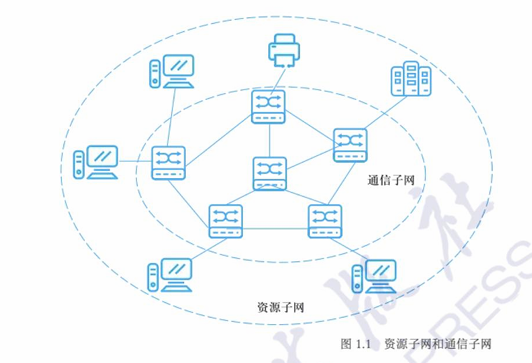
[!note]
计算机网络的组成可以概括为：
- 物理视角：由 “结点（控制设备）+ 链路（传输线路）+ 主机（终端 / 服务设备）” 连接而成；
- 功能视角：分为 “资源子网（处理信息、提供服务）” 和 “通信子网（传输信息、转发数据）”。
计算机网络拓扑结构
计算机网络的组成（结点、链路、主机），而 “拓扑结构” 就是这些组成元素的 “几何排列方式”—— 它决定了网络中数据的传输路径、故障影响范围和运维难度，是网络设计的核心基础。
- 计算机网络拓扑结构，本质是网络中各结点（交换机、路由器等）与链路（网线、光纤等）的互联模式，即几何布局。
- 拓扑结构关注的是 “逻辑连接关系”，而非物理设备的实际地理位置
- 拓扑结构的设计直接影响网络的三个关键指标：可靠性，成本，可维护性
[!tip]
常见的基本网络拓扑结构
拓扑类型 核心结构亮点 核心优势 关键劣势 典型应用场景 星状拓扑 所有终端连单一中心结点 结构简单、故障易定位、扩展性好 中心结点是单点瓶颈、终端多则成本高 家庭 WiFi、办公室网络、校园网接入层 环状拓扑 结点首尾闭合形成环 安装简单、无数据冲突 单结点 / 链路故障致全网瘫痪、延迟随环增大 早期令牌环网、小型工业控制网 总线型拓扑 所有结点共享一条主干链路 成本低、传输逻辑简单 总线故障致全网瘫痪、结点多易冲突 早期同轴电缆以太网、小型楼道监控网 网状拓扑 结点间多链路互联（含部分网状） 可靠性极强、传输快、负载均衡 成本极高、配置复杂 互联网骨干网、金融核心网络 树状拓扑 星状拓扑的层级扩展（根 - 枝 - 叶） 扩展性极强、管理清晰、故障易定位 上层结点是瓶颈、层级多则延迟高 校园网、企业网（核心 - 汇聚 - 接入分层） 混合型拓扑 组合两种以上基本拓扑 兼顾可靠性、成本、扩展性 设计和维护复杂 绝大多数实际网络（如校园网、城市政务网）
星状拓扑
星状拓扑是目前应用最广泛的网络拓扑结构，星状拓扑的核心是 “中心节点 + 终端设备” 的辐射式连接 ：
- 所有终端设备（电脑、手机、打印机）都通过独立的链路（网线、WiFi）连接到一个中心节点（通常是交换机或路由器）；
- 任意两个终端设备之间的通信，都必须经过中心节点转发 —— 比如你用电脑给同办公室的同事传文件，数据会先从你的电脑传到中心交换机，再由交换机转发到同事的电脑。
优点：拓扑结构简单（一条链路 + 一个接口接入即可），健壮性强（故障影响范围小），便于管理（故障易定位）
星状拓扑的唯一核心缺点是 “中心节点是单点瓶颈”：中心节点故障，所有连接到该中心节点的设备都会断网
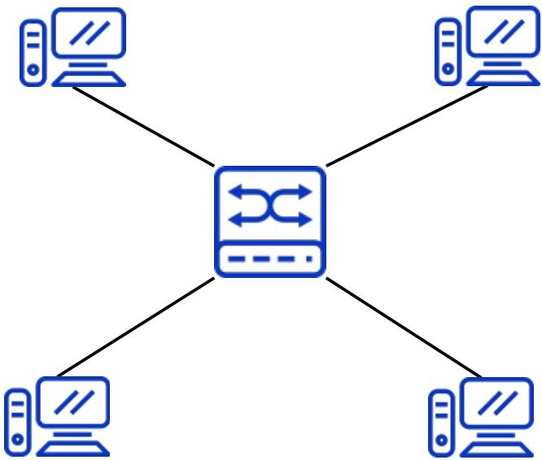
环状拓扑
环状拓扑是早期网络中常见的拓扑类型，核心特征是 “设备首尾相连形成闭合环”
- 环状拓扑中，所有网络设备（如工作站、交换机）通过通信链路首尾顺次连接，最终形成一个 “闭合的环形”
- 数据在环中沿固定方向（顺时针或逆时针）传输，遵循 “逐结点转发” 规则：
- 发送设备将数据打包成 “帧”，注入环中；
- 数据帧按固定方向传输，每经过一个设备，该设备会检查帧的 “目标地址”—— 若不是自身地址，就继续转发给下一个设备；若是自身地址，就接收数据并停止转发；
- 为避免数据在环中无限循环，部分环状拓扑（如令牌环网）会用 “令牌” 控制数据发送（只有拿到令牌的设备才能发数据）。
优点：安装与重配置简单，无数据冲突问题
缺点：传输延迟随规模增大而显著升高，可靠性差：单故障致全网瘫痪，维护难度高：故障定位复杂
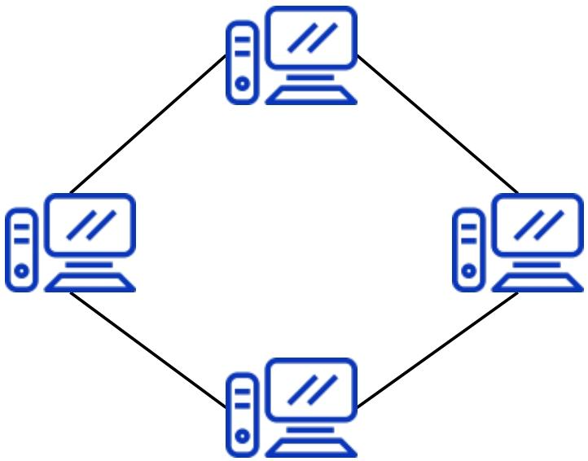
总线型拓扑
总线型拓扑是早期局域网的经典拓扑之一，核心特征是 “所有设备共享一条主干链路”
- 总线型拓扑的核心是 “一条主干电缆 + 多个分支设备”：
- 用一条 “主干电缆”（早期多为同轴电缆，类似有线电视线）作为网络的核心传输通道，相当于 “城市主干道”；
- 所有网络设备（电脑、打印机等）通过 “T 型接头” 或 “分接头” 连接到主干电缆上，设备与主干之间用 “引出线”（短电缆）连接，类似 “主干道上的支路连接到各个建筑”。
- 总线型拓扑的数据传输遵循 “广播 + 监听” 逻辑，没有中间转发设备（如交换机），核心流程如下：
- 数据广播：某台设备发送数据时，会将数据打包成 “帧”，通过引出线注入主干电缆 —— 数据会在主干上双向传输（向主干的两个端点扩散），所有连接在主干上的设备都能 “监听到” 这份数据；
- 地址匹配：每个设备会实时监听主干上的数据流，检查数据帧中的 “目标地址”—— 若地址与自身地址一致，就接收并处理数据；若不一致，就忽略该数据；
- 冲突处理：若多台设备同时向主干发送数据，会导致 “数据碰撞”（冲突），此时所有设备会暂停发送，等待随机时间后重试（早期通过 CSMA/CD 协议解决冲突，即 “载波监听多路访问 / 冲突检测”）。
优点：信息传输无路由转发，逻辑简单；易于安装，成本低
缺点：信号衰减限制网络规模；主干故障致全网瘫痪；多设备通信易冲突，效率低
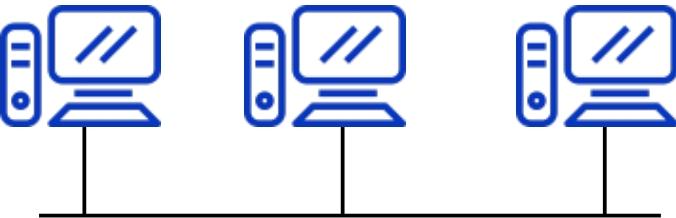
网状拓扑
网状拓扑是所有基础拓扑中可靠性最高的类型，核心特征是 “设备间两两专线互联”
- 网状拓扑的核心是 “全互联” 或 “部分互联” 的冗余设计 ：
- 全网状拓扑（理想形态）：网络中每一台设备都通过独立的专线链路，与其他所有设备直接连接—— 例如 3 台设备需 3 条链路，4 台设备需 6 条链路，n 台设备需 n (n-1)/2 条链路，形成 “多对多” 的连接关系，类似 “社交网络中每个人都和其他人直接好友”；
- 部分网状拓扑（实际主流）：仅核心设备（如骨干路由器）之间采用全互联，普通设备（如接入层交换机）仅与 1-2 台核心设备连接 —— 既保留冗余可靠性，又降低成本，是现实中网状拓扑的主要形式。
- 网状拓扑的数据传输依赖 “动态路由协议”，核心逻辑是 “多路径可选，智能避障”：
- 路径发现：每台设备通过路由协议（如 OSPF、BGP）与其他设备交换 “链路状态信息”，实时掌握全网所有链路的连通情况，构建 “全网拓扑地图”；
- 最优路径选择：发送数据时，设备会根据 “链路带宽、延迟、负载” 等指标，从多条可达路径中选择最优路径 —— 例如北京到广州的数据包，可选择 “北京 - 广州” 直达链路，也可选择 “北京 - 上海 - 广州” 链路，若直达链路负载高，会自动切换到绕行链路；
- 故障自动恢复：若某条链路或设备故障（如北京 - 广州的链路断了），设备会通过路由协议快速检测到故障，并重新计算最优路径（自动切换到 “北京 - 上海 - 广州” 或 “北京 - 深圳 - 广州”），整个过程通常在秒级完成，用户几乎感知不到中断。
优点：健壮性极强：抗故障能力拉满；负载分担：避免网络拥塞
缺点：成本极高：链路与接口数量呈指数级增长；配置与维护复杂：对运维要求极高
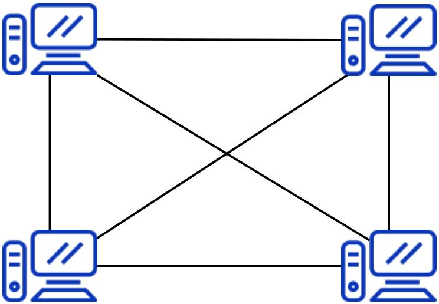
树状拓扑
树状拓扑是星状拓扑的 “升级版”，核心特征是 “按层级关系扩展”，完美适配大规模网络的分层管理需求，是校园网、企业网等园区网络的主流拓扑选择。
- 树状拓扑的核心是 “星状拓扑的层级叠加”，形成 “根 - 枝干 - 叶” 的树形结构：
- 根节点：网络的顶层核心设备（如校园网的核心交换机、企业网的核心路由器），是全网数据交互的 “中枢”
- 枝干节点：中间层级的汇聚设备（如校园网的楼宇汇聚交换机、企业网的部门汇聚路由器），负责汇总下层设备的流量并转发到根节点
- 叶节点：网络的底层接入设备（如校园网的教室接入交换机、企业网的员工电脑 / 打印机），直接连接终端用户或小型设备
- 树状拓扑的数据传输遵循 “分层转发” 逻辑，核心是 “数据按层级流动，不跨层级直达”
优点：扩展性极强：支持 “无限层级扩展”；管理清晰：故障定位与维护效率高；带宽利用率高：分层汇聚减少冗余流量
缺点：可靠性较差：上层节点是 “单点故障源”；传输延迟随层级增加而升高
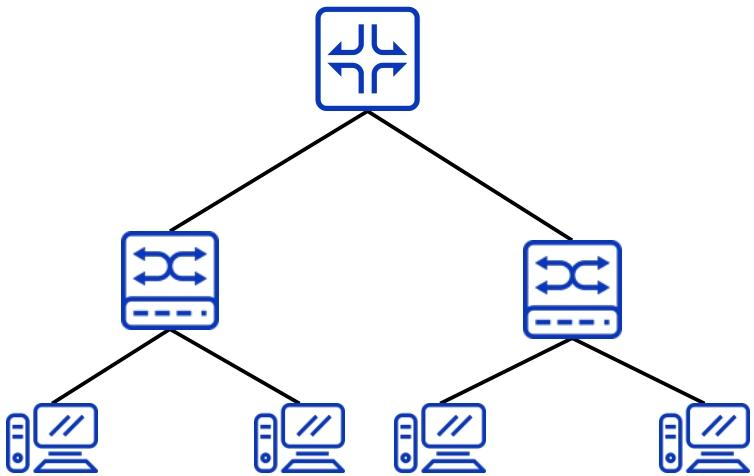
混合型拓扑
- 混合型拓扑是结合两种或两种以上基础拓扑（星状、环状、网状、树状等），根据实际场景需求（如成本、可靠性、地理位置）灵活设计的拓扑结构。
- 基础拓扑是 “零件”，混合型拓扑是 “用零件组装的成品”，成品的结构完全由 “使用需求” 决定。
实际网络中，混合型拓扑的常见组合有 3 种，覆盖 90% 以上的场景：
- 核心网状 + 汇聚树状 + 接入星状（最主流）：核心层用网状保证可靠性，汇聚层用树状分层管理，接入层用星状降低成本（如企业园区网、校园网）；
- 核心星状 + 接入星状（小型网络）：核心层 1 台交换机（星状中心），接入层多台交换机连核心，终端连接入交换机（如小型公司、网吧）；
- 核心环状 + 接入星状（工业场景）：核心层用环状保证实时性，接入层用星状连接传感器、控制器（如工厂生产线网络）。
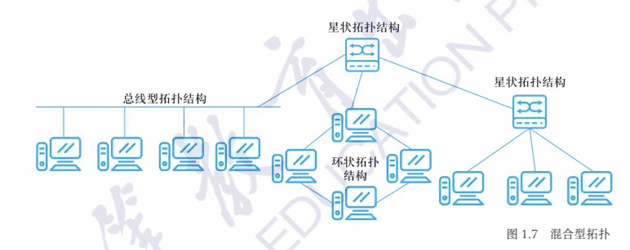
计算机网络分类
计算机网络的分类是理解不同场景网络特性的关键 —— 通过 “接入方式” 可明确设备与网络的连接载体，通过 “覆盖范围” 能快速判断网络的应用场景和技术特点。
按接入方式划分
接入方式的核心是 “设备与网络连接的物理载体”，直接决定网络的灵活性、稳定性和适用场景，分为有线网络和无线网络两大类。
- 有线网络：“物理线路为载体” 的稳定连接
- 通过有形的物理线路（如网线、光纤、同轴电缆）实现设备与网络的连接，数据通过线路中的电信号或光信号传输。
- 无线网络：“无线电波为载体” 的灵活连接
- 无需物理线路，通过无线电波（如 WiFi、5G、蓝牙）实现设备与网络的连接，数据通过电磁波在空气中传输。
按覆盖范围划分：从 “个人” 到 “全球” 的四级网络
覆盖范围的核心是 “网络服务的地理区域大小”，直接决定网络的拓扑结构、传输技术和核心功能，分为个域网（PAN）、局域网（LAN）、城域网（MAN）、广域网（WAN） 四级，覆盖范围依次扩大。
个域网（PAN，Personal Area Network）：“围绕个人” 的最小网络
个域网的核心是服务个人设备协同，场景高度贴近日常办公与生活
- 围绕某个人而搭建的计算机网络
- 覆盖范围一般小于10米,可以视为一种特殊类型的局域网,支持的是 一个人而不是一个小组｡
个域网（PAN）分为有线和无线两类
- 有线个域网：依靠短距离有线传输介质连接设备，常见的有 USB 数据线连接手机与电脑、Thunderbolt 接口连接电脑与外接显示器等，传输稳定且不易受干扰。
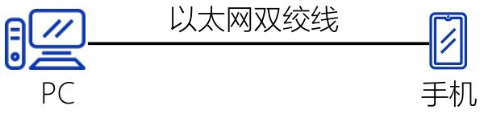
- 无线个域网：无需线缆，通过无线信号传输数据，遵循 IEEE 802.15 系列标准，覆盖范围通常 10 米以内，适配移动场景下设备的灵活连接。
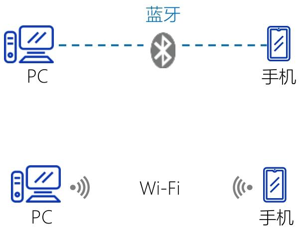
局域网（LAN）：局部区域的高速互联网络
局域网（Local Area Network，LAN）是局限于单一地点（如办公室、教室、家庭、一栋 / 一组建筑）的网络，本质是 “同一物理范围内设备的高速互联系统”—— 它既可以独立运行（仅内部设备互通），也可以通过路由器接入外网（如互联网）。
- 覆盖范围有限（通常 < 10 公里）
- 单一组织管理，自主可控
- 传输速率高、延迟低
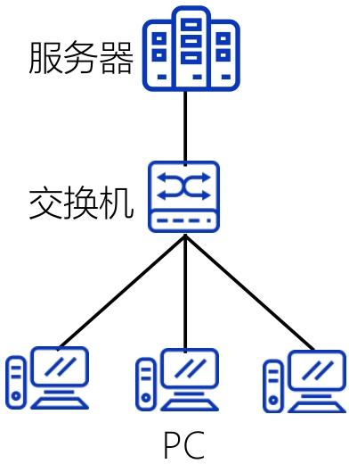
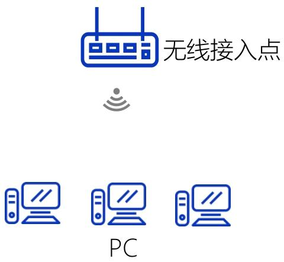
城域网（Metropolitan Area Network，MAN）
覆盖范围介于局域网（单栋 / 多栋建筑）与广域网（跨城市 / 国家）之间，通常以一座城市、大型都市圈或巨型校园（如高校大学城、科技园区） 为单位，覆盖半径一般为10-100 公里，可灵活适配城市核心区、近郊等不同区域的网络需求。
- 整合城市内分散的企业、家庭、机构局域网，又通过接口与广域网连接，实现跨城市的数据交互
- 通常是跨越一个城市或一个大型校园的大规模计算机网络，通常使用高容量的骨干网技术（如光纤链路）来互连多个局域网
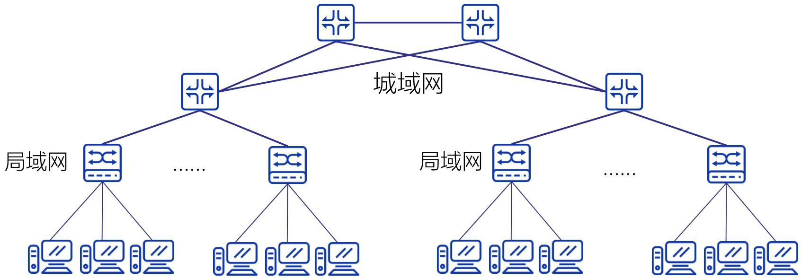
广域网（WAN）
广域网（Wide Area Network，简称 WAN）是计算机网络按覆盖范围划分的核心类别之一，也是连接地理上广泛分布节点的关键网络形态，其核心价值在于突破局域网（LAN）、城域网（MAN）的地理限制，实现长距离、跨区域的资源共享与数据传输。
- 盖尺度为跨地区、跨国家甚至全球
- 支持多类型信息传输，包括数据（如文件、数据库交互）、声音（如 VoIP 语音通话）、图像（如高清图片）、视频（如远程会议、流媒体）
- 不依赖单一私有链路，而是组合使用公共通信设备、租赁链路或私有链路
- 通常由多个组织协同管理
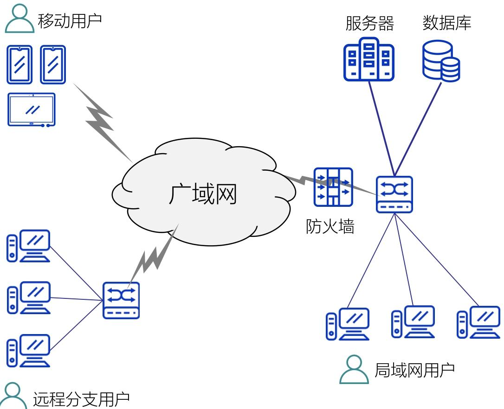
[!note]
网络类型 覆盖范围 核心特点 典型例子 个域网（PAN） ＜10 米（围绕个人） 设备少、用于个人设备互联 手机通过蓝牙连接电脑传文件 局域网（LAN） 一栋建筑 / 一组建筑 速率高、单一组织管理 家庭 Wi-Fi（连接电脑、电视、手机）、公司办公室网络 城域网（MAN） 一个城市 / 大型校园 连接多个局域网、用光纤骨干网 某市的有线电视网络、大学跨校区网络（如清华园校区与深圳校区互联） 广域网（WAN） 跨地区 / 国家 / 全球 长距离传输、多组织管理 互联网、企业跨省市办公网
计算机网络体系结构
计算机网络体系结构是解决 “跨设备、跨网络复杂通信” 的核心理论框架，其本质是通过分层定义功能、标准化协议，将 “PC1 到 PC2 的数据传输” 这一复杂问题拆解为可实现、可协同的子任务。
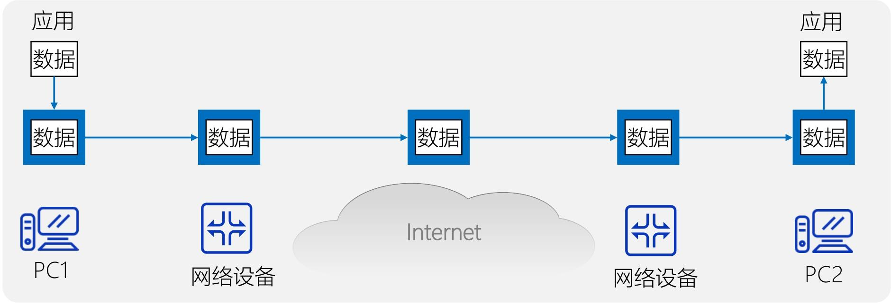
- 计算机网络体系结构 = 各层功能定义 + 对应层协议的集合
- “层”：按 “数据传输的逻辑流程” 划分的功能模块（如 “负责数据加密”“负责路由选择”“负责应用数据封装” 等）；
- “协议”：同一层的不同设备（如 PC1 和 PC2 的 “应用层”）之间，为实现通信而约定的 “规则、标准或约定”；
- 抽象性：体系结构仅 “精确定义各层应完成的功能”（比如 “传输层要保证数据可靠传输”），不涉及具体的硬件 / 软件实现即实现细节；而 “协议的实现” 是具体的（如用编程语言编写的 TCP 协议软件、路由器中的路由协议硬件模块），且必须遵循体系结构的规则。
网络协议
为进行网络中的数据交换而建立的规则、标准或约定，即网络协议
协议是体系结构的 “执行细则”，任何协议都必须包含语法、语义、时序三要素
| 三要素 | 核心作用（解决 “什么问题”） | 通俗举例（以 “PC1 给 PC2 发文件” 为例） |
|---|---|---|
| 语法 | 规定 “数据的格式与结构”，解决 “如何讲对方才懂” 的问题 | PC1 的传输层需将文件数据封装为 “TCP 报文段”，格式必须是 “首部（20 字节）+ 数据段”，PC2 的传输层才能识别并解析（若格式混乱，PC2 会认为是无效数据） |
| 语义 | 规定 “数据的含义与动作”，解决 “讲什么、做什么” 的问题 | TCP 协议中，“首部的 ACK=1” 这一控制信息的语义是 “确认已收到数据”；PC2 收到后，需执行 “停止重传该数据” 的动作（若语义不明确，PC1 可能重复发数据） |
| 时序 | 规定 “操作的顺序”，解决 “讲话有秩序、不混乱” 的问题 | 通信流程必须是 “PC1 先发送连接请求（SYN 报文）→ PC2 回复确认（SYN+ACK 报文）→ PC1 再发文件数据”，不能颠倒（若时序混乱，会出现 “PC2 还没准备好，PC1 就发数据” 的错误） |
体系结构
体系结构是计算机网络及其部件的各层所应完成的功能的精确定义
- 体系结构是抽象的
- 协议的实现是具体的，是真正在运行的计算机硬件和软件，即实现是遵循体系结构的前提下用硬件或软件完成预定的功能
分层
“分层”可将庞大而复杂的问题，转化为若干较小的局部问题，而这些较小的局部问题就比较易于研究和处理
分层的本质是将 “端到端通信” 这一庞大任务，拆解为多个功能独立、职责明确的子任务，每个子任务由一层负责，最终通过层间协作实现整体功能
- 每层完成特定的功能
- 各层协调起来实现整个网络系统
优点：各层独立灵活，结构可分，易于实现和维护，同时有利于标准化
缺点：由于通信的传递，可能会降低效率，并且有些功能会在各层冗余
原则：不同等级的抽象建立一层； 功能相近的分在一层； 每层功能明确；边界信息要尽量少； 层次数量应适当
网络协议的层次结构
- 层次栈（Layer Stack）—— 通信功能的 “垂直拆解”
- 层次栈是网络协议层次结构的物理基础，本质是将 “端到端通信” 的完整功能，按 “抽象等级” 和 “功能职责” 拆分为若干个独立的 “垂直层次”，且每一层都建立在其下一层的功能基础上，仅为上一层提供服务。
- 对等实体（Peer Entities）—— 跨设备的 “逻辑通信方”
- “对等实体” 是层次结构中跨设备的 “逻辑通信伙伴”，指 “不同主机（或网络设备）上，处于同一层次的功能模块 / 组件”。
- 对等实体遵循 “同一协议”。只有遵循相同的协议，对等实体才能 “听懂对方的逻辑语言”
- 接口（Interface）—— 层间服务的 “边界规则”
- 接口是相邻两层之间的 “服务契约”，定义了 “下层必须向上层提供哪些具体服务（原语操作）”，以及 “上层如何调用这些服务或者请求服务”
- 层间 “实通信” vs 对等实体 “虚通信”（物理层除外）
- 实通信” 指同一主机内，相邻两层之间通过 “接口” 进行的真实数据 / 控制信息传递。
- 虚通信” 指不同主机的对等实体之间，通过 “协议” 进行的 “逻辑通信”
[!TIP]
物理层（第 1 层）的对等实体（如 PC1 的网卡和路由器的网卡）是唯一实现 “实通信” 的对等实体—— 因为它们直接通过物理介质（网线、无线信号）传递电信号 / 光信号，无需依赖更下层（没有比物理层更低的层次）
OSI 参考模型（开放系统互连参考模型）
OSI（Open Systems Interconnection Reference Model，开放系统互连参考模型）是由国际标准化组织（ISO）于 1984 年制定的网络通信架构标准，其核心目标是解决不同厂商、不同类型网络设备之间的 “兼容性问题”—— 通过统一的分层框架，让来自不同系统的设备能遵循相同的通信规则，实现跨平台、跨网络的互联互通。
- 解决网络之间不能兼容和不能通信的问题
- OSI 模型的设计遵循 “分层解耦” 原则：
- 每一层只与相邻的上一层（请求服务）和下一层（提供服务）交互，不关心其他层的实现细节；
- 不同设备的 “对等层”（如主机 A 的第 3 层与主机 B 的第 3 层）通过统一的 “协议” 进行 “虚通信”（逻辑上的通信），而实际的数据传输则通过 “层间实通信”（从上层到下层，再通过物理介质传递到对方设备，最后从下层到上层）完成。
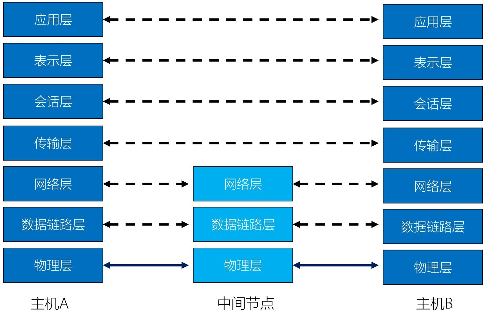
[!NOTE]
物联网书会使用
层名 核心功能 数据单元 关键技术 / 协议示例 通俗类比 应用层 核心：应用程序的网络业务
详细：处理用户数据与信息，完成用户实际需求（如网页浏览、文件传输、邮件发送），是用户与网络的直接接口。数据（用户级） HTTP/HTTPS（网页）、FTP（文件传输）、SMTP（邮件） 用户（发件人写快递内容、收件人拆件看内容）—— 直接对接 “人的需求” 表示层 核心：数据表达
详细：解决用户信息语法问题，对数据进行翻译、编码、变换（如统一格式、加密 / 解密、压缩 / 解压缩），确保接收方正确解析。数据（编码后） JPEG、MP3、SSL/TLS（加密）、ASCII 编码 快递包装标准化（不规则物品装标准纸箱、敏感文件加锁）—— 确保 “内容可识别” 会话层 核心：主机间通信详细：建立、管理、终止用户进程间的通信会话，确认双方身份、协商会话细节（如超时重连、同步检查点）。 会话数据单元 RPC（远程过程调用）、NetBIOS 发件人确认收件人地址 / 收件时间 —— 协商 “通信连接规则” 传输层 核心：端到端的连接可靠性
详细：实现端到端（如主机 A 进程→主机 B 进程）的可靠通信，负责端口识别、端到端流量控制、差错重传。报文（Message） TCP 协议（可靠）、UDP 协议（不可靠） 快递公司总部调度（确认端到端链路、丢包重发）—— 负责 “全局可靠性” 网络层 核心：地址和最佳路径详细：负责跨网络路由选择（规划最优传输路径）、拥塞控制、网际互连，通过 IP 地址识别不同网络。 分组（Packet） IP 协议、路由协议（RIP、OSPF）、ICMP 快递全国调度中心（规划北京→上海路线、避开拥堵）—— 负责 “跨区域找路” 数据链路层 核心：访问介质
详细：访问物理介质，实现相邻设备间可靠传输，完成分帧、排序、差错检测与纠正（提供可靠链路）、流量控制、链路建立 / 拆除，通过 MAC 地址识别设备。帧（Frame） 以太网（Ethernet）、VLAN、PPP 本地快递点操作（按小区分堆、扫描确认无丢件、控制卸货速度）—— 负责 “本地小范围可靠传输” 物理层 核心：二进制传输
详细：通过物理介质（导线、光纤等）传输二进制信号，定义硬件接口（如 RJ45）、电压速率、信号编码规则，规定机械特性，电气特性，功能特性和规程特性，但是不关心数据含义。比特（Bit） 双绞线、光纤、RJ45 接口、RS-232 快递运输工具 + 道路 / 航线（货车、飞机、传送带）—— 负责 “物理信号传输”
网络互连设备
网络互连设备是用于连接不同网络、扩展网络覆盖范围或实现不同协议间通信的硬件设备，核心作用是解决 “网络如何连通”“信号如何可靠传输”“不同类型网络如何协作” 等问题
网络互连设备总览（按 OSI 工作层级从低到高排序）
| 设备类型 | OSI 工作层级 | 核心定位 | 通俗类比（以 “城市交通” 为例） |
|---|---|---|---|
| 中继器 | 仅物理层（第 1 层） | 信号 “放大器”，扩展物理网段 | 高速公路上的 “路灯 / 信号增强器”（只补信号，不换路线） |
| 网桥 | 物理层（第 1 层）+ 数据链路层（第 2 层） | 局域网内 “分拣员”，按物理地址转发 | 城市内的 “区域快递分拣点”（按小区地址分送，不跨城市） |
| 路由器 | 物理层 + 数据链路层 +网络层（第 3 层） | 跨网络 “导航仪”，按 IP 选路径 | 全国高速 “交通调度中心”（规划从北京到上海的最优路线） |
| 网关 | 所有 7 层（重点在高层） | 异类网络 “翻译官”，转换协议 | 国际航班 “海关 + 翻译”（解决不同国家语言、规则的互通） |
中继器（Repeater）
解决物理信号在传输中的衰减问题 —— 当二进制信号（0/1）通过网线、光纤等物理介质传输时，距离越远信号越弱（类似声音越传越小），中继器会接收衰减的信号、再生放大后重新发送，从而延长网络的物理覆盖范围
- 通过再生信号扩展网络的物理网段
- 不以任何方式改变网络的功能
- 仅仅运行在物理层
网桥（Bridge）
作为 “存储转发设备”，主要在局域网内部工作：先接收数据链路层的 “帧”（数据单元），读取帧中的MAC 地址（设备的物理地址），再根据 MAC 地址表判断 “该帧要发给哪个设备”，只向目标设备所在的网段转发（不广播到所有网段），减少局域网内的无效数据干扰。
- 同时作用在OSI的物理层和数据链路层
- 在数据链路层进行数据帧的存贮和转发
- 识别物理地址；具备寻址功能
路由器（Router）
解决 “跨网络通信” 的核心设备 —— 当数据需要从一个网络（如公司内网）传输到另一个网络（如互联网、其他公司的网络）时，路由器会读取网络层的 “分组”（数据单元）中的IP 地址（逻辑地址），通过路由协议（如 RIP、OSPF）计算 “从当前网络到目标网络的最优路径”，再将数据转发到下一个路由器或目标网络，最终实现 “端到端的跨网传输”。
- 工作在物理层 + 数据链路层 + 网络层
- 能连接 “不同类型的网络”
- 具备 “拥塞控制” 能力
网关（Gateway）
解决 “异类网络协议互通” 的问题 —— 当两个网络的 “通信规则（协议）完全不同” 时（如局域网的 TCP/IP 协议与大型机的 SNA 协议），普通路由器无法识别对方的协议，而网关会作为 “协议转换器”，在 OSI 的所有 7 层（从物理层的信号到应用层的业务数据）进行 “翻译”：将 A 网络的协议格式转换为 B 网络能理解的格式，再转发数据，实现 “本质不同的网络间通信”。
- 协议转换器
- 工作在 OSI所有 7 层
- 能互连异类的网络；在局域网的微机和小型机或大型机之间作翻译
总结
| 对比维度 | 中继器 | 网桥 | 路由器 | 网关 |
|---|---|---|---|---|
| 最高 OSI 层级 | 物理层（1） | 数据链路层（2） | 网络层（3） | 所有 7 层 |
| 识别的地址 | 不识别地址 | MAC 地址（物理） | IP 地址（逻辑） | 多种协议地址 |
| 核心能力 | 放大信号 | 局域网分拣 | 跨网选路 | 协议转换 |
| 连接网络类型 | 同类型物理网段 | 同协议局域网 | 不同类型网络 | 异类协议网络 |
| 能否跨互联网 | 不能 | 不能 | 能 | 能（需翻译） |
层间通信与对等层通信
分层的核心是 “每一层只负责特定功能，通过标准化接口协作”，而这两种通信正是分层协作的两种核心方式。
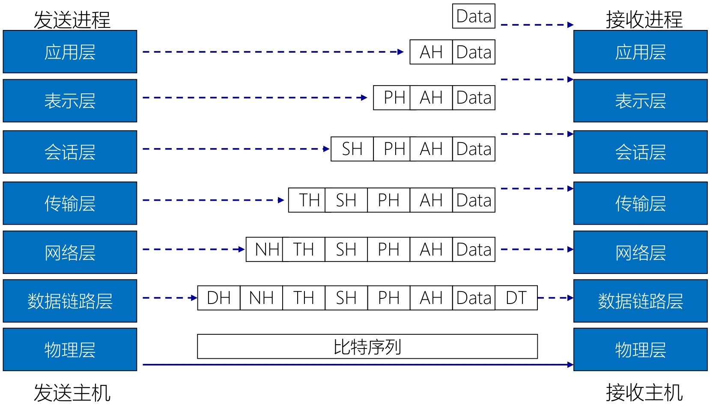
- 发送主机（从上到下：封装）
- 应用层：发送进程产生原始数据（
Data），加上应用层头部（AH，含应用层协议信息，如 HTTP 头部），形成 “应用层 PDU（协议数据单元）”； - 传输层：接收应用层 PDU，加上传输层头部（
TH，含端口号等，如 TCP 头部），形成 “传输层 PDU（段 / Segment）”； - 网络层：接收传输层 PDU，加上网络层头部（
NH，含 IP 地址等），形成 “网络层 PDU（数据包 / Packet）”； - 数据链路层：接收网络层 PDU，加上数据链路层头部（
DH，含 MAC 地址等）和尾部（帧校验序列 FCS），形成 “数据链路层 PDU（帧 / Frame）”； - 物理层：接收数据链路层帧，将其转换为 “比特序列”（电信号 / 光信号），通过物理介质（网线、光纤）传输。
- 应用层：发送进程产生原始数据（
- 接收主机（从下到上：解封装）
- 物理层：接收比特序列，还原为数据链路层帧，传递给数据链路层；
- 数据链路层：验证 FCS、剥离
DH和尾部，还原为网络层数据包，传递给网络层； - 网络层：剥离
NH，还原为传输层段，传递给传输层； - 传输层：剥离
TH，还原为应用层 PDU，传递给应用层； - 应用层：剥离
AH，还原为原始Data，传递给接收进程。
层间通信（Inter-layer Communication）
在同一台主机（或网络设备）内部，OSI 模型中 “相邻的上下两层” 通过标准化的 “接口”（称为 “服务访问点 SAP”）进行数据传递和功能协作 —— 本质是 “垂直方向的通信”。
- 同一设备内：仅发生在发送主机或接收主机内部，不跨设备；
- 相邻层：只能是 “直接上下层”
- 接口标准：每层都为上层即
N+1层提供 “服务”（如下层帮上层处理数据封装 / 传输），上层通过 “SAP” 调用或者请求下层服务，接口规则由 OSI 标准定义（确保不同厂商的设备可兼容）。
对等层通信（Peer-layer Communication）
在不同主机（或网络设备）之间，OSI 模型中 “相同层级”（如发送主机的应用层↔接收主机的应用层、发送主机的网络层↔接收主机的网络层）通过 “相同的协议” 进行的 “逻辑通信”—— 本质是 “水平方向的通信”。
- 跨设备：发生在发送端和接收端（如 PC1 和 PC2）的相同层级之间；
- 对等层：必须是 “同层级”
- 本质：逻辑通信：对等层之间不直接传递物理信号，而是通过 “下层的层间通信” 间接实现
- 依据：对等层协议：同层级必须遵守相同的协议规则
服务与协议
“协议是水平的逻辑规则，服务是垂直的功能支撑”
- 协议（Protocol）：水平的逻辑规则协议是同一层（对等层）的实体之间（如发送主机的第 n 层 ↔ 接收主机的第 n 层），为了实现通信而约定的 “规则、格式、顺序”（即之前提到的 “语法、语义、时序”）—— 它是水平方向的逻辑约定，只约束 “同层级的实体如何交互”。
- 服务（Service）：垂直的功能支撑服务是下层实体向上层实体（如第 n 层 ↔ 第 n+1 层）提供的 “功能支持”（如下层帮上层处理数据封装、传输）—— 它是垂直方向的功能传递，只约束 “相邻层之间如何协作”。
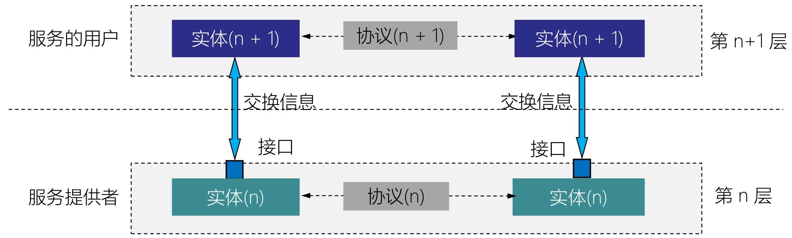
服务、服务访问点（SAP）和各类数据单元（IDU、SDU、PDU）
- 服务（Service）
- 下层实体向上层实体提供的功能支持（如传输层为应用层提供 “端到端可靠传输” 服务），是垂直方向的功能传递（对应之前提到的 “服务是垂直的”）。
- 服务访问点（SAP：Service Access Point）
- 相邻层之间的接口（如应用层与传输层之间的接口），是上层实体调用下层服务的 “入口”—— 上层通过 SAP 发送请求，下层通过 SAP 返回结果，实现层间功能的解耦。
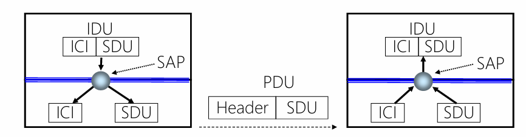
| 数据单元 | 英文缩写 | 定义与作用 |
|---|---|---|
| 接口数据单元 | IDU | 上层通过 SAP 传递给下层的 “完整数据单元”，包含ICI + SDU：- ICI：接口控制信息，用于控制层间交互（如下层如何处理数据）；- SDU：服务数据单元，是上层需要下层处理的 “原始数据”。 |
| 接口控制信息 | ICI | 包含层间交互的控制指令（如 “是否需要加密”“传输优先级”），是 IDU 的一部分。 |
| 服务数据单元 | SDU | 上层需要下层 “处理并传输” 的数据内容（如应用层的 HTTP 请求数据），是 IDU 的核心部分。 |
| 协议数据单元 | PDU | 下层对 SDU 的 “封装结果”：下层接收 SDU 后，添加本层的PCI（协议控制信息，如头部），形成 PDU，用于对等层通信（如下层通过 PDU 与接收主机的同层实体交互）。 |
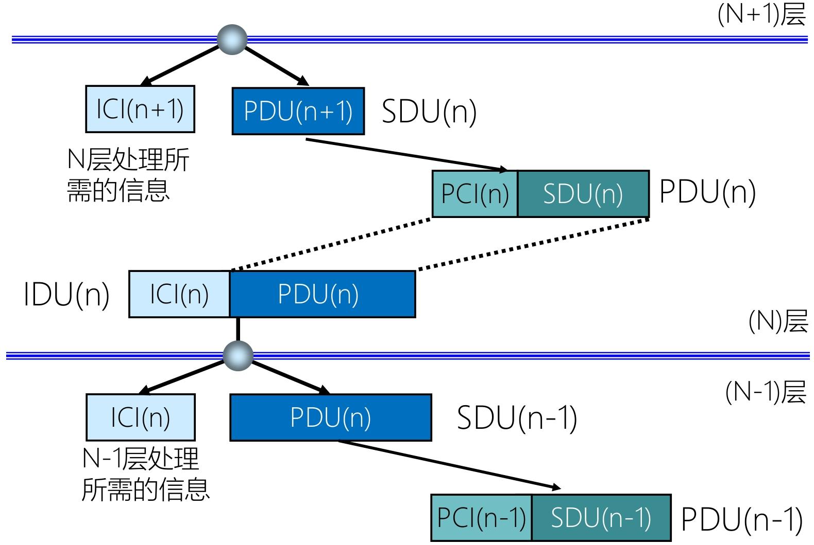
- N+1 层准备数据：N+1 层生成SDU(n+1)（自身需要传输的原始数据），添加ICI(n+1)（控制 N 层如何处理的指令），组合成IDU(n+1)，通过SAP传递给 N 层。
- N 层处理数据：N 层接收 IDU (n+1) 后，拆分出 ICI (n+1)（解析控制指令）和 SDU (n+1)—— 此时，SDU (n+1) 会作为 N 层的 SDU (n)（N 层需要处理的数据）。N 层对 SDU (n) 添加本层的PCI(n)（协议控制信息，如传输层的 TCP 头部），形成PDU(n)，用于与接收主机的 N 层实体进行对等层通信。
- N 层调用 N-1 层服务：N 层将 PDU (n) 作为SDU(n-1)，添加ICI(n)（控制 N-1 层的指令），组合成IDU(n)，通过 SAP 传递给 N-1 层，重复上述流程，直到物理层。
面向连接服务与无连接服务
二者的本质区别在于是否通过 “预先建立连接” 保障数据传输的可靠性
面向连接服务（Connection-Oriented Service）
面向连接服务的核心是 “先建连接、再传数据、最后释放连接”，通过固定的 “三阶段流程” 确保数据有序、可靠、不丢失
- 可靠性优先；资源预留；有状态
- 传输层的TCP 协议（如网页浏览 HTTP/HTTPS、文件传输 FTP、即时通讯）：需确保网页内容、文件、消息不丢失、不错乱。
无连接服务（Connectionless Service）
无连接服务的核心是 “无需预先建立连接，直接发送数据”，不保证数据的可靠性和顺序
- 效率优先；无资源预留；无状态
3种类型： 数据报； 证实交付（可靠的数据报）； 请求/响应
TCP/IP
TCP/IP（Transmission Control Protocol/Internet Protocol，传输控制协议 / 网际协议）是互联网的核心通信体系结构，它通过分层设计实现不同设备间的标准化数据传输，目前已成为全球通用的 “事实上的国际标准”，而 OSI 参考模型因设计复杂、实现成本高等问题未获得广泛市场认可。
TCP/IP网络体系结构
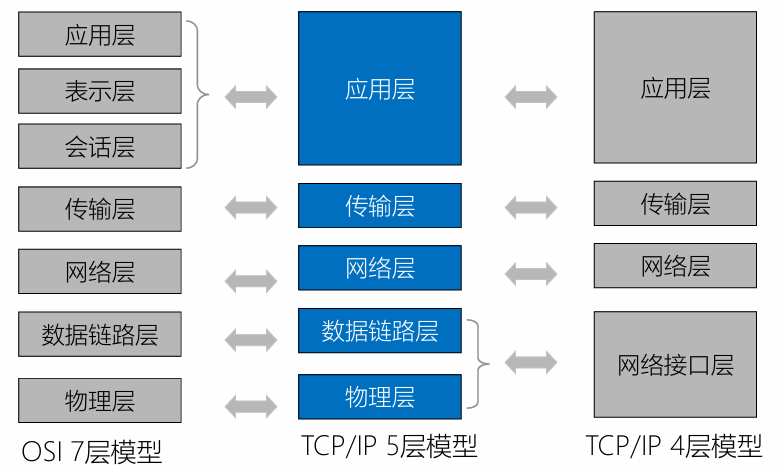
TCP/IP 体系结构通常有4 层模型和5 层模型两种表述（5 层模型是在 4 层基础上细化物理层，更贴近实际网络实现）
| TCP/IP 4 层模型 | TCP/IP 5 层模型 | OSI 7 层模型 | 核心功能 |
|---|---|---|---|
| 应用层 | 应用层 | 应用层、表示层、会话层 | 为用户提供具体应用服务（如网页、邮件），定义应用程序间的通信规则 |
| 传输层 | 传输层 | 传输层 | 负责端到端（如两台主机的应用程序间）的可靠数据传输，控制数据流量和差错恢复 |
| 网络层 | 网络层 | 网络层 | 实现不同网络间的路由选择（跨网通信），定义 IP 地址格式，将数据分组转发到目标网络 |
| 网络接口层 | 数据链路层 | 数据链路层 | 负责同一物理网络内（如局域网）的帧传输，处理 MAC 地址、帧封装与差错检测 |
| - | 物理层 | 物理层 | 定义物理设备（如网线、网卡）的电气特性、接口标准，实现二进制数据的物理传输 |
TCP/IP参考模型
TCP/IP 由 Vint Cerf 和 Bob Kahn 于 1974 年为 ARPANET（互联网前身）设计，核心目标是解决 “不同类型网络如何互联互通” 的问题。
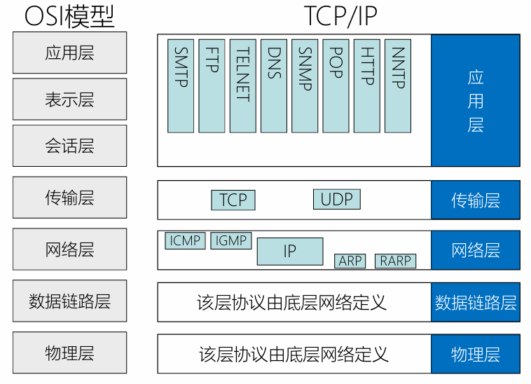
TCP/IP 参考模型分为 4 层，每层负责特定功能，协议由底层网络或上层应用定义，具体如下：
| 分层 | 核心功能 | 关键协议及作用 |
|---|---|---|
| 链路层 | 适配底层物理网络，为网络层提供 “无连接的分组传输服务”，负责物理链路内的帧封装与传输。 | 协议由底层网络定义（如以太网、Wi-Fi），实现 “IP over everything”（IP 可运行在任意物理网络上）。 |
| 网络层 | 定义数据包格式和协议（(IP 地址（IPv4/IPv6）)，实现 “跨网络的分组转发”：将数据拆分为 IP 分组，通过路由选择传递到目标网络。 | - IP：定义分组格式与地址，是跨网通信的核心； - ARP/RARP：实现 IP 地址与 MAC 地址的转换 - ICMP：网络故障诊断（如 ping）；- IGMP：组播通信管理。 |
| 传输层 | 实现 “端到端（源主机应用→目标主机应用）” 的通信：通过端口号区分应用，保证数据可靠 / 高效传输。 | - TCP：面向连接的可靠传输（三次握手建立连接、重传机制），适用于文件、网页等场景； - UDP：无连接的高效传输，适用于直播、游戏等实时场景。 |
| 应用层 | 直接为用户应用提供服务，整合了 OSI 模型中会话层、表示层的功能。 | 包含各类上层协议（如 HTTP：网页浏览；FTP：文件传输；DNS：域名解析；SMTP：邮件发送），实现 “Everything over IP”（任意应用可基于 IP 运行）。 |
[!note]
TCP/IP 参考模型摒弃了传统电话系统 “笨终端 & 聪明网络”（终端仅负责简单输入输出，网络承担路由、差错恢复等复杂逻辑）的设计思路，采用 “聪明终端 & 简单网络” 的创新架构，核心逻辑如下：
- 简单网络：网络核心仅负责 “分组转发” 这一基础功能（通过路由表将 IP 分组送达目标地址），不承担差错恢复、流量控制等复杂任务，即网络层不再负责差错控制、流量控制、连接建立与释放、可靠传输管理等功能。这是和OSI不同的地方
- 聪明终端：由终端（如电脑、手机等 “端系统”）通过 TCP 协议实现可靠性保障，包括数据丢失重传、顺序重组、流量控制等功能，最终实现 “建立在简单、不可靠网络部件上的可靠数据传输系统”。
IP 分组交换
IP 分组交换是 TCP/IP 模型的 “灵魂”，通过以下 3 个特点实现 “万物互联”：
- IP over everything（IP 承载于任意物理网络）：IP 分组可在任意底层物理网络（如以太网、Wi-Fi、4G/5G 移动网络、光纤网络）上传输，无需为不同物理网络设计专属协议，打破了 “物理网络类型限制”。
- Everything over IP（任意应用基于 IP 承载）：无论是网页、视频、邮件、物联网数据，还是语音通话，都可封装为 IP 分组传输，实现 “一种协议支撑所有应用场景”，避免了应用与网络的强绑定。
- 分组独立路由：每个 IP 分组都携带完整的 “源 IP 地址” 和 “目的 IP 地址”，网络核心设备（路由器）仅需根据目的 IP 查询路由表，独立转发每个分组（无需关注分组间的关联），进一步简化了网络逻辑。
交换技术
交换技术是网络数据传输的核心机制，核心解决 “如何在源设备和目标设备之间分配传输资源、转发数据” 的问题。
电路交换
电路交换（Circuit Switching）：通过物理线路的连接，动态地分配传输线路资源。
电路交换的过程：
建立连接（尝试占用通信资源） 通信（一直占用通信资源） 释放连接（归还通信资源）
优点
- 通信前端和端建立一条专用的物理通路，在通信时间内，两个用户始终占用端到端的线路资源。数据直连，传输速率高。
- 缺点：
- 建立 / 释放连接，需要额外的时间开销。
- 线路被通信双方独占，利用率低
- 线路分配的灵活性差
- 交换节点不支持 “差错控制”（无法发现传输过程中的发生的数据错误）
适用于： 低频次、大量地传输数据
报文交换
报文交换（Message Switching）：由控制信息和用户数据组成，由存储转发的方式传输数据。
- 存储转发 的思想：把传送的数据单元先存储进中间节点，再根据目的地址转发至下一节点。
- 优点：
- 通信前无需建立连接
- 数据以 “报文” 为单位被交换节点间 “存储转发”，通信线路可以灵活分配 在通信时间内，两个用户无需独占一整条物理线路。相比于电路交换，线路利用率高。
- 交换节点支持 “差错控制”（通过校验技术）
- 缺点：
- 报文不定长，不方便存储转发管理
- 长报文的存储转发时间开销大，缓存开销大
- 长报文容易出错，重传代价高
分组交换
分组交换将报文（不定长）拆分为控制信息和数据，其中控制信息：包含源地址、目的地址等。而数据则拆分为若干个分组（Packet），每个分组（定长）包含了首部和分组数据 首部（Header）：即分组的控制信息，包含源地址、目的地址、分组号等
注意：存储转发：在交换机能够开始向输出链路传输该分组的第一个比特之前，必须接收到整个分组。
- 优点：
- 通信前无需建立连接
- 数据以 “分组” 为单位被交换节点间 “存储转发”，通信线路可以灵活分配在通信时间内，两个用户无需独占一整条物理线路。相比于电路交换，线路利用率高
- 交换节点支持 “差错控制”（通过校验技术）
- 由上可见，分组交换继承了报文交换的优点，并改进以下问题： 分组定长，方便存储转发管理 分组的存储转发时间开销小、缓存开销小 分组不易出错，重传代价低
- 缺点：
- 相比于报文交换，控制信息占比增加
- 相比于电路交换，依然存在存储转发时延
- 报文被拆分为多个分组，传输过程中可能出现失序、丢失等问题，增加处理的复杂度
虚电路交换技术
基于分组交换的交换技术 虚电路交换的过程：
建立连接（虚拟电路） 通信（分组按序、按已建立好的既定路线发送，通信双方不独占线路） 释放连接
| 对比维度 | 电路交换 | 报文交换 | 分组交换 |
|---|---|---|---|
| 完成传输所需时间 | 👍 最少 (排除建立 / 释放连接耗时) | 👎🏿 最多 | 👌🏻 较少 |
| 存储转发时延 | 👍 无 | 👎🏿 较高 | 👌🏻 较低 |
| 通信前是否需要建立连接？ | 👎🏿 是 | 👍 否 | 👍 否 |
| 缓存开销 | 👍 无 | 👎🏿 高 | 👌🏻 低 |
| 是否支持差错控制？ | 👎🏿 不支持 | 👍 支持 | 👍 支持 |
| 报文数据有序到达 | 👍 是 | 👍 是 | 👎🏿 否 |
| 是否需要额外的控制信息 | 👍 否 | 👌🏻 是 | 👎🏿 是 (控制信息占比最大) |
| 线路分配灵活性 | 👎🏿 不灵活 | 👍 灵活 | 👍 非常灵活 |
| 线路利用率 | 👎🏿 低 | 👍 高 | 👍 非常高 |
计算机网络的性能指标
速率
- 信道（Channel）：表示某一方向传送信息的通道（信道 ≠ 通信线路），一条通信线路在逻辑上往往对应一条发送信道和一条接收信道。
- 速率（Speed）：指连接到网络上的节点在信道上传输数据的速率。也称为数据率、比特率、数据传输速率。
- 速率单位：bit/s、b/s、bps。
[!tip]
K M G T 计网 10^3 10^6 10^9 10^12 机组、操作系统 2^10 2^20 2^30 2^40
带宽
- 带宽（bandwidth）：某信道所能传送的最高数据率，单位 bps。
- 通信原理中的带宽与计网中的带宽不同，通信原理中的带宽表示信道允许通过的信号频带范围，单位 Hz。例如光纤带宽约 500MHz。
- 信道带宽越大，传输数据的能力越强。
吞吐量
- 吞吐量（Throughput）：指单位时间内通过某个网络（或信道、接口）的实际数据量（实际的综合数据率）。
- 吞吐量受带宽限制、受复杂的网络负载情况影响。
- 实际吞吐量：min{R1,R2,...,RN} ，R 是链路传输速率。即瓶颈链路传输速率。当没有其他千扰流最时，其吞吐量能够近似为沿着源和目的地之间路径的最小传输速率
时延
- 时延（Delay）：指数据（一个报文或分组，甚至比特）从网络（或链路）的一端传送到另一端所需的时间，也成为延迟或迟延。
- 总时延 = 发送时延 + 传播时延 + 处理时延 + 排队时延，即
dnodal = dproc + dqueue + dtrans + dprop - 处理时延 dproc：检查分组首部和决定将该分组导向何处、检查比特级别差错等所需要的时间。
- 排队时延 dqueue：如果到达的分组需要传输到某条链路，但发现该链路正忙于传输其他分组，该到达的分组必须在输出缓存中等待。时间无法确定。
- 传输时延 dtrans：
L/R，L 比特表示分组长度，R bps表示路由器之间的链路传输速率。这是将所有分组的比特推向链路所需要的时间。 传播时延 dprop：
d/s，d 是路由器之间的距离，s 是链路的传播速率。表示从链路起点到另一个路由器传播所需要的时间。时延带宽积 时延带宽积，指一条链路中，已从发送端发出但尚未到达接收端的最大比特数。 时延带宽积 = 传播时延 × 带宽。单位为 bit。
往返时延 往返时延（Round-Trip Time，RTT）：表示从发送方发送完数据，到发送方收到来自接收方的确认总共经历的时间。
信道利用率：某个信道有百分之多少的时间是有数据通过的。 信道利用率 = {有数据通过的时间}/{有数据通过的时间+没有数据通过的时间}
利用率低回浪费带宽资源；利用率太高可能导致网络拥塞